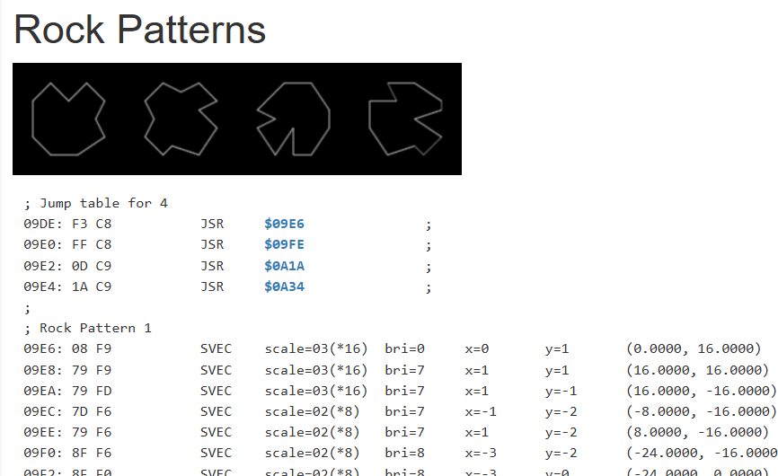

Asteroids first hit arcades in 1979 when I was just 11 years old, and I remember spending countless quarters just to play it. The game was simple but undeniably addictive. In my attempt recreating the original, I relied on historical notes and archival research to capture its authentic look and feel as accurately as possible.
I used the exact vector drawing of the ship and asteroids to redraw the graphics. The game was played using vector style graphics so I tried to maintain the look, feel and size of the monitor. Asteroids spawn in the same numbers as did the game come in Large, Med and Small with scores of 20, 50 , 100 like they did in the game. 
The only deliberate change I made was allowing high score names to be longer than the original three characters. I want to emphasize that I have no affiliation with Atari; I simply used the Asteroids and Atari to recreate the game as authentic as possible.
Released in 1979 by Atari Inc., Asteroids quickly became one of the most iconic arcade games of its era. Developed by a team that included renowned figures like Ed Logg, the game was a prime example of Atari’s ability to push the boundaries of technology and gameplay during the late 1970s. Its release marked a turning point in arcade history, as it offered players a brand-new experience set against the vast emptiness of space.
Influence and Innovation – From Lunar Lander to a Space Odyssey
Asteroids was not created in a vacuum. It drew inspiration from earlier Atari successes such as Lunar Lander, a game that emphasized precision and the struggle against gravity. While Lunar Lander challenged players to safely navigate a spacecraft onto a lunar surface, Asteroids expanded on the concept by immersing players in an endless, asteroid-filled void. This evolution from one focused landing task to continuous, free-form space navigation contributed to the game’s addictive challenge and relentless pace.
The Magic of Vector Graphics
One of Asteroids’ most distinguishing features was its use of vector graphics. Instead of traditional pixel-based sprites, the game rendered its visuals using bright, glowing lines that traced the shapes of asteroids, the ship, and other objects. This method not only produced a uniquely futuristic and crisp display but also allowed for smooth rotations and scaling effects that set Asteroids apart from other titles of its time.
Commercial Success and Cultural Impact
Asteroids was a runaway commercial success. At its peak, the game was one of the highest-earning arcade titles, reportedly generating tens of millions of dollars in quarters worldwide. This immense revenue helped solidify Atari’s reputation as a pioneer in the video game industry and ensured Asteroids’ place in arcade folklore.